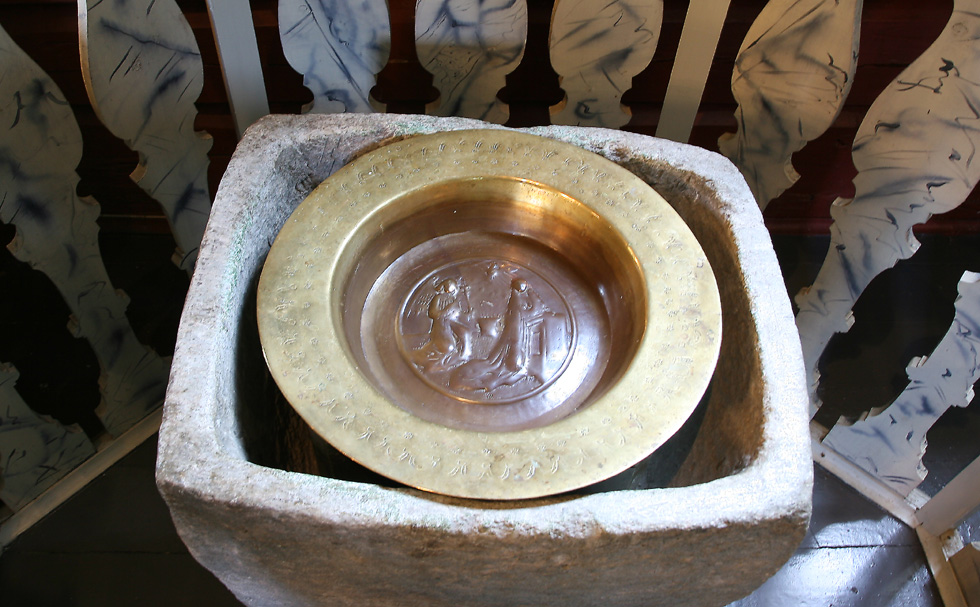
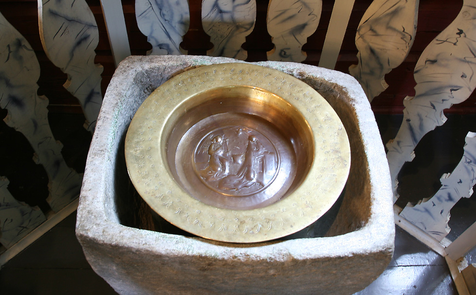
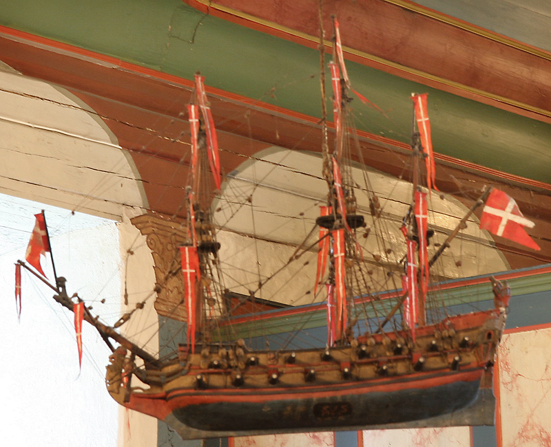
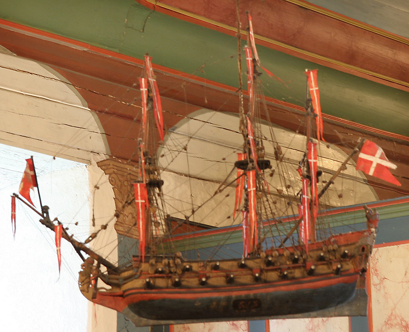
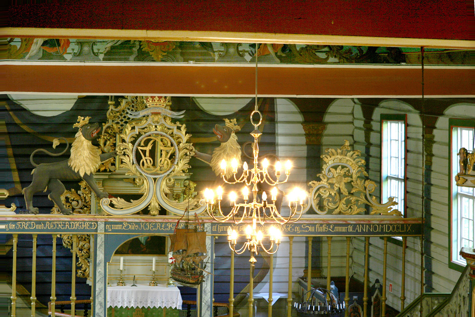
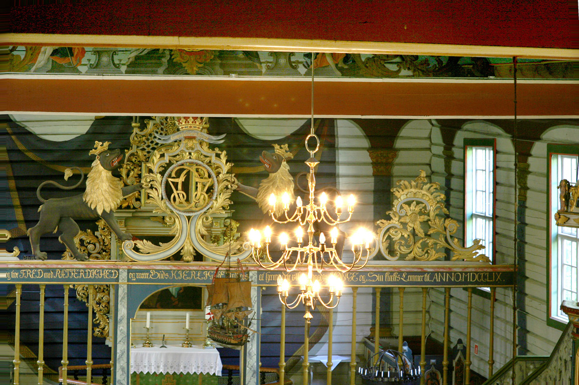
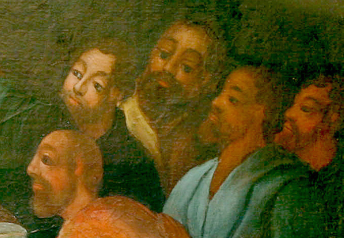
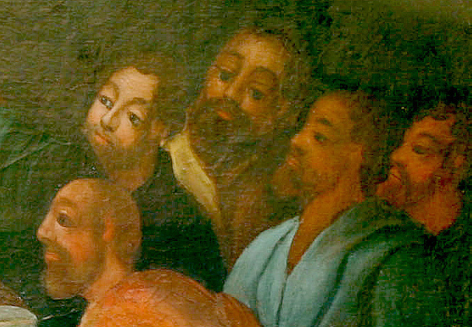

Dypvåg kirke
Foto: Torvald Slettebø, Universitetet i Agder, Seniorsenteret
Tekst: Bjarne Karsten Nenseter
Prestegjeld: Holt
Prosti: Aust-Nedenes
Kommune:Tvedestrand
M.U. 1760
Kommer en sjøveien fra Tvedestrand mot Risør, vil en litt vest for Lyngør, oppdage et kirketårn som hever seg inne i bunden av en dyp våg. Det er det stilfulle tårn på Dypvåg kirke som ligger ved Rv 411 i Tvedestrand kommune og Holt prestegjeld. Fra 1812 til 1960 var Dypvåg eget prestegjeld med Flosta som anneks. Nå hører Dypvåg igjen til Holt, mens Flosta er lagt til Austre Moland. Kommer en sjøveien fra Tvedestrand mot Risør, vil en litt vest for Lyngør, oppdage et kirketårn som hever seg inne i bunden av en dyp våg. Det er det stilfulle tårn på Dypvåg kirke som ligger ved Rv 411 i Tvedestrand kommune og Holt prestegjeld. Fra 1812 til 1960 var Dypvåg eget prestegjeld med Flosta som anneks. Nå hører Dypvåg igjen til Holt, mens Flosta er lagt til Austre Moland.
Den eldste del av Dypvåg kirke var en enkel liten steinkirke med ca. l,50 m tykke murer. Muligens kan den ha vært et privatkapell som menigheten senere har overtatt. Den er fra ca. 1200. Med tiden ble den opprinnelige kirken for liten og ble i likhet med Holt kirke og flere andre, bygget om til korskirke. Det skjedde i årene 1759-60. Koret ble revet og sydveggen fjernet, og skipet innlemmet i tømmerkirken på en fantastisk måte. Det var den samme byggmester som sto for ombyggingen av Holt kirke noen år tidligere, som også stod for Dypvåg kirke, nemlig Lars Albretsen Øvernes.
Førstekonservator Sigrid Christie og arkitekt Håkon Christie sier om disse kirkene: "Helheten i anlegget preges av den beherskede kombinasjon av murenes og tømmerveggenes rustike tyngde og snekrenes og malernes lette, grasiøse innredning og utsmykning av det lysfylte rom. De samme trekk finner vi i en rekke kirker i omegnen, slik at de fortoner seg som karakteristiske for tidens kirkerom i dette distrikt. Vi forbinder dem med sørlandsk lynne, og for en beundrende ettertid står disse kirker like meget som avspeilinger av et sinnelag som eksponenter for en stilepoke. Med det kjennskap vi nå har til Sørlandets bygningskunst, står 1700-årenes kirkerom som korskirken i Dypvåg er en av de mest talentfulle representanter for, som distriktets mest verdifulle bidrag til vår romkunst"
Koret var særlig rikt utstyrt. Det var skilt fra skipet med en korsranke med portal og dreide søyler eller ballustre. Planken over korsranken var utsmykket med figurer og ornamenter med Fredrik V' s monogram i midten. Den praktfulle prekestolen var kommet til stenkirken alt i 1735, noen år før ombyggingen. En blir overveldet av de glade farger når en går inn i kirken. Hvelvet har fått en lys blå farge med gylne, røde, grå og hvite skyer. Den henter sin glans fra en strålende sol i sentrum. Solen lovprises av fire engler i flagrende gevanter og meterlange basuner.
Noen år etter at kirken var ombygd, kom Sørlandsrokokkoens mester Ole Nilsen Weierholt til Dypvåg kirke for å utsmykke den. Fredrik V-utstyret ble da flyttet fra korsvillen opp til takbjelken. Istedet kom Weierholt's rike rokokko-ornamentikk med løver som flankerer Fredrik VII's monogram. Videre arbeidet Weierholt og hans sønner den overdådige altertavlerammen. Selve alterbildet er en kopi ved Jens Stær av alterbildet i Risør kirke som igjen er en speilvendt kopi av Rubens nattverdbilde i Milano. Det var bestilt av Peter den store, men båten som fraktet bildet, forliste utenfor Risør. Over nattverdbildet, finner vi et bilde av korsfestelsen også malt av Jens Stær. Weierholt har også skåret himlingen over prekestolen og det elegante dåpshuset, sammen med sønnen Søren. Stafferingen er ved Anders Løve. Dåpshuset er en kopi av Chr. Suchow's i Holt kirke. Av annet verdifullt inventar nevnes kleberstens døpefont fra den eldste del av kirken og kirkeskipene «Admiral Røyter» gitt av Klemmet Jespersen 1722 og «Den Norske Løve» gitt av Jens B. Borøen 1767. I godt og vel 100 år beholdt Dypvåg dette fargerike og vakre interiør. Da nådde det alminnelige forfall i siste halvdel av forrige århundre også Dypvåg. Kirken ble overmalt og mange av kirkens prydelser kastet ut.
1921 ble arkitekt Lars Backer og restaureringskonsulent Finn Krafft engasjert til å restaurere Dypvåg kirke. De foretok en grundig undersøkelse og gikk på oppdagerferd for å finne spor etter kirkens gamle interiør. Finn Krafft har mye av æren for at kirken har fått igjen sitt gamle interiør. Han sporet opp inventaret, og med stor innlevelsesevne og pietetsfølelse gjenskapte han det gamle interiør. Han har malt «med påholden pensel» og derfor har det lykkes å finne fram til det opprinnelige. Restaureringen var ferdig i 1923.1 1962 feiret man 750-års jubileum for kirken med besøk av H-. M. Kong Olav og biskop Kaare Støylen. Dypvåg kirke er igjen en av våre vakreste, et Sørlandsrokokkoens monument, "hvor den sommerlyse prakt og sjøens og skjærgårdens og solnedgangens fargeglede er ført inn som en jublende hymne», som Finn Krafft har sagt det.
Teksten er hentet fra Bjarne Karsten Nenseters bok ”PÅ KIRKEVANDRING I AUST-AGDER”, som han utga i 1993, på grunnlag av sine artikler i Agderposten i 1950-årene, da han var prest i Aust-Agder. Vi gjengir her teksten med tillatelse fra Nenseters arvinger
 

 

 


 
